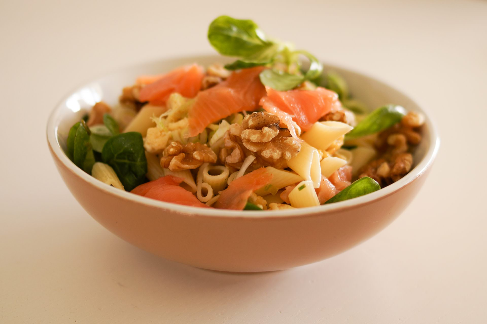

Nudelauflauf mit Käse und Gemüse
Diesen Nudelauflauf wirst du lieben.Gesunde Vollkornnudeln treffen auf Käse und Gemüse.

Pesto mit Basilikum und Limetten
Pesto meets Zucchini. Wie das sein kann erfährst du in diesem frischen Gericht.

Spaghetti mit Pul Biber
Spaghetti schlicht und einfach, so wie man sie kennt. Kein Champagner und kein Kavier, einfach ein schlichter und bescheidener Klassiker

Avocado-Basilikum-Creme
Hier findest du eine gesunde Mischung aus Avocado und Basilikum. Ein einfaches und gesundes Rezept, das man einfach lieben muss.

Walnuss-Tomaten-Pesto
Walnüsse und Nudeln?. Dieses Rezept zeigt dir, wie dir diese Mischung gut gelinkt und gut schmecken kann.